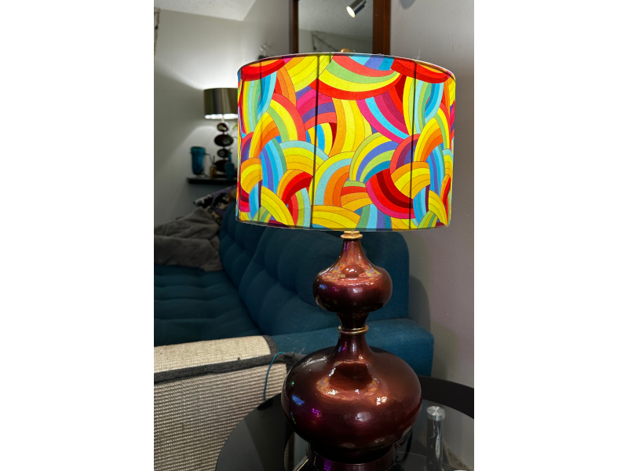
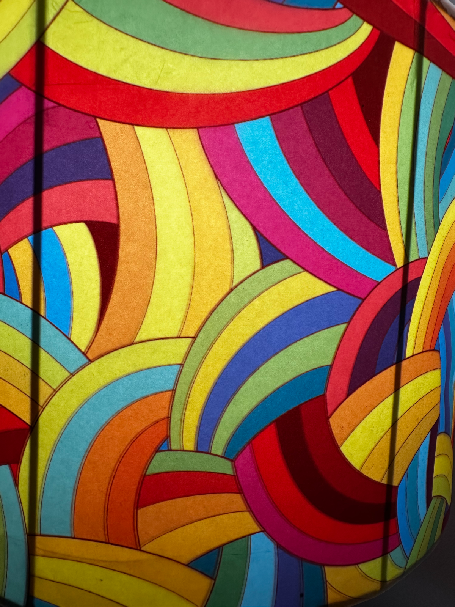

Transformation · Found Object
Wood base. Wicker shade. Neither was wrong — they just weren’t right.


The original object
The lamp came with a wood base and a wicker and seagrass shade. The base had good bones — a double-gourd silhouette with real presence. The shade was doing nothing with it. Seagrass is texture without light, and a shade’s entire job is light. The seagrass came off. The wire frame stayed.
The base
The wood base was prepped with gesso first, then painted using Arteza metallics, mixing toward a copper and rose tone rather than straight brown. Rose metallic was applied along the outermost curves of the base, following the widest contours. Where the light hits those curves, the surface shifts. Brown becomes copper, copper becomes something that moves.
The shade
The shade pattern is a tile design found online — a repeating rainbow arc motif at full saturation, every color of the spectrum. It was brought into GIMP, scaled to fit a blank shade template, and arranged into printable sections. Each section was printed, laminated for body and durability, then cut and fitted to the existing wire frame.
The laminated surface was finished with a clear matte spray — matte spray fills minor surface imperfections that transmitted light would otherwise find and amplify. The result behaves like stained glass. The arc pattern saturates when the bulb is on, the color moves through the panels, and the room gets the light the shade was always supposed to give.
Where it lives
The lamp sits in the corner of the living room beside the couch. The shade is full-spectrum rainbow arcs at maximum saturation. The base holds its own against it — deep burgundy with copper iridescence along the curves, enough presence to anchor something that loud above it. It is exactly what it was supposed to be.
Technical notes
Tags
More making